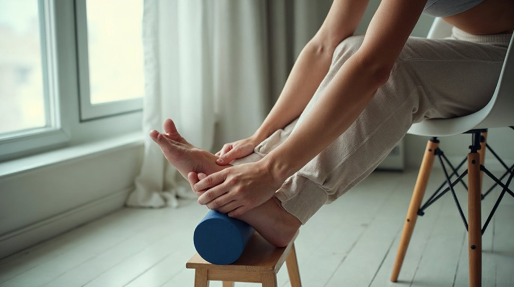
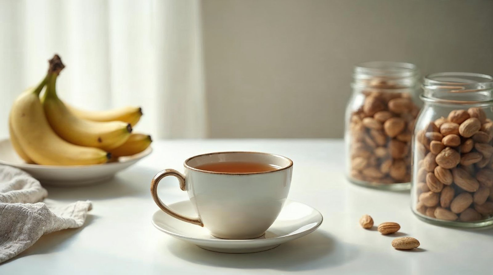

이종호 한의사 감수좋은꿈참사랑한의원 대표원장 (한의사 면허번호 19769)발행 2026-11-25 · 수정 2026-11-26
이 글의 차례
- 왜 이런 불편이 생길 수 있나요
- 쥐와 다른 다리 불편은 어떻게 구분하나요?
- 스스로 점검해 보는 목록
- 먼저 이렇게 여쭙니다
- 쥐가 났을 때는 어떻게 풀어야 덜 아플까요?
- 일상에서 먼저 해 볼 수 있는 것
- 잠자리는 어떻게 준비하면 좋을까요?
- 낮 동안 무엇을 챙기면 밤이 편할까요?
- 왜 하필 새벽에 잘 나는 걸까요?
- 쥐가 나서 깬 뒤에는 어떻게 다시 잠들까요?
- 잠들기 전 5분, 어떤 순서로 풀면 좋을까요?
- 겨울에 운동을 시작한 뒤 쥐가 늘었다면요?
- 식사는 어떻게 챙기면 좋을까요?
- 신발과 걷는 습관도 관련이 있을까요?
- 발을 따뜻하게 담글 때는 어떻게 하나요?
- 하루 종일 서서 일하는 분은 무엇을 더 챙기나요?
- 술을 마신 날 쥐가 더 잦은 것은 왜일까요?
- 임신 중이거나 어르신이라면 무엇이 다른가요?
- 얼마나 자주 나면 진료를 받아 보는 것이 좋을까요?
- 한의원에서 함께 살필 수 있는 경우
- 이렇게 기록해 오시면 상담이 쉬워집니다
- 이런 증상은 먼저 확인이 필요합니다
자다가 종아리에 쥐가 나서 깬다면, 낮에 다리를 얼마나 썼는지와 잠자리가 차갑지 않은지를 먼저 살펴보는 것이 좋습니다. 추워지면 물을 덜 마시고 덜 걷다가, 어느 날 오래 서 있거나 언덕을 많이 오르내린 밤에 종아리가 딱딱하게 뭉쳐 깨기 쉽습니다.
예를 들어 낮에 장을 보러 언덕을 오르내리고 저녁에는 물 대신 따뜻한 커피만 마신 날, 새벽에 종아리가 돌처럼 뭉쳐 깨는 경우가 있습니다. 쥐가 풀린 뒤에도 다음 날까지 종아리가 뻐근하게 남기도 합니다. 대부분은 생활을 조금 바꾸면서 지켜볼 수 있지만, 자주 반복되면 이유를 함께 찾아보는 것이 좋습니다.
한밤중에 쥐가 나면 아픈 것도 아픈 것이지만, 다시 잠들기가 어렵다는 것이 더 괴롭습니다. 한 번 깨고 나면 또 날까 봐 다리를 조심스럽게 두고 뒤척이다가 새벽을 맞았다는 말씀을 진료실에서 자주 듣습니다.
그래서 저는 쥐 자체만 묻지 않고, 쥐가 난 뒤 잠을 얼마나 이어서 주무셨는지도 함께 여쭙니다. 다리와 잠을 같이 살펴야 다음 날 낮이 덜 무겁기 때문입니다. 쥐가 한 번 났을 뿐인데 그날 하루가 통째로 피곤했다면, 그 피곤함까지 진료실에서 이야기해 주셔도 좋습니다.
왜 이런 불편이 생길 수 있나요
- 낮에 오래 서 있거나 평소보다 많이 걸으면 종아리 근육이 피로해집니다.
- 찬 공기에 발과 종아리가 드러나면 근육이 굳기 쉽습니다.
- 겨울에는 물 마시는 양이 줄어드는 분이 많습니다.
- 이불 속에서 발끝을 아래로 뻗은 자세가 종아리를 짧게 만든 채 오래 둡니다.
겨울에는 땀을 덜 흘리니 목이 덜 마르고, 그래서 물을 찾는 횟수가 줄어듭니다. 대신 따뜻한 커피나 차를 자주 마시는데, 카페인이 든 음료는 소변을 늘려 몸의 물이 오히려 빠져나가기 쉽습니다.
두꺼운 이불은 발등을 아래로 눌러 발끝이 뻗은 자세를 만듭니다. 종아리가 짧아진 채로 몇 시간을 지내다가 기지개를 켜듯 다리를 쭉 뻗는 순간, 근육이 확 수축하며 쥐가 나는 경우가 많습니다.
쥐와 다른 다리 불편은 어떻게 구분하나요?
쥐는 근육이 갑자기 단단하게 뭉치며 몇 초에서 몇 분 동안 심하게 아프다가 풀리는 것이 특징입니다. 만져 보면 종아리가 돌처럼 딱딱하고, 발끝이 저절로 아래로 꺾이기도 합니다.
잠들려고 누우면 다리 속이 근질거리고 가만히 두기 힘들어 자꾸 움직이고 싶다면, 쥐와는 다른 양상일 수 있습니다. 움직이면 잠깐 편해지고 가만히 있으면 다시 불편해지는 식이라면 진료 때 꼭 말씀해 주세요.
걸을 때마다 종아리가 조여 오다가 잠깐 쉬면 풀리는 것도 밤의 쥐와는 결이 다릅니다. 언제, 어떤 자세에서 불편한지가 구분의 가장 중요한 단서입니다.
스스로 점검해 보는 목록
- 쥐가 나는 날이 일주일에 두 번 이상이다
- 쥐가 난 날은 낮에 평소보다 오래 서 있거나 많이 걸었다
- 하루에 마시는 물이 컵으로 세 잔이 안 된다
- 커피나 녹차를 하루 세 잔 넘게 마신다
- 잠잘 때 발이 차다고 느낀다
- 엎드리거나 발끝을 뻗은 채 잔다
- 쥐가 난 뒤 다시 잠들기까지 삼십 분 넘게 걸린다
해당하는 항목이 많을수록 생활에서 먼저 바꿔 볼 것이 많다는 뜻입니다. 이 목록은 진단이 아니라 습관을 돌아보는 도구로 써 주세요. 두 주쯤 생활을 바꾼 뒤 같은 목록을 다시 체크해 보면, 무엇이 달라졌는지 스스로 확인할 수 있습니다.
먼저 이렇게 여쭙니다
- 쥐가 일주일에 몇 번, 주로 몇 시쯤 나나요?
- 한쪽 다리인가요, 양쪽인가요?
- 그날 낮에 오래 서 있거나 많이 걸었나요?
- 다리가 붓거나 저리고 시린 느낌이 있나요?
- 복용 중인 혈압약이나 이뇨제, 다른 약이 있나요?
쥐가 났을 때는 어떻게 풀어야 덜 아플까요?
쥐가 나면 놀라서 다리를 움켜쥐게 되는데, 먼저 숨을 한 번 내쉬고 무릎을 편 채 발끝을 몸 쪽으로 천천히 당겨 주세요. 손이 발끝에 닿지 않으면 수건을 발바닥에 걸어 당겨도 됩니다.
조금 풀리기 시작하면 일어나 벽을 짚고 아픈 다리를 뒤로 보내 발뒤꿈치를 바닥에 붙인 채 섭니다. 종아리가 천천히 늘어나는 느낌이 들 때까지 기다렸다가, 방 안을 몇 걸음 걸어 보세요.
다 풀린 뒤에는 따뜻한 손으로 종아리를 아래에서 위로 부드럽게 쓸어 올려 주세요. 세게 주무르면 다음 날 더 뻐근할 수 있어, 쓰다듬는 정도로 충분합니다.

일상에서 먼저 해 볼 수 있는 것
- 잠들기 전 벽을 짚고 종아리를 천천히 늘리기
- 수면 양말이나 얇은 담요로 종아리와 발을 따뜻하게 하기
- 낮 동안 물을 조금씩 자주 마시기
- 쥐가 나면 발끝을 몸 쪽으로 천천히 당기고 일어나 가볍게 걷기
- 오래 서 있던 날은 따뜻한 물에 발 담그기
잠자리는 어떻게 준비하면 좋을까요?
이불 끝을 발치에서 조금 느슨하게 빼 두면 발등이 눌리지 않아 발끝이 아래로 꺾이는 자세를 덜 수 있습니다. 옆으로 누워 잔다면 무릎 사이에 얇은 베개를 끼우는 것도 다리를 편하게 해 줍니다.
종아리 아래에 낮은 쿠션을 받쳐 다리를 살짝 올리고 자는 것을 편하게 여기는 분도 있습니다. 너무 높이 올리면 오히려 허리가 불편해질 수 있으니, 손바닥 두께 정도면 충분합니다.
방이 너무 차면 다리가 굳고, 전기장판을 세게 켜면 땀을 흘려 몸의 물이 빠집니다. 발은 수면 양말로 따뜻하게 하고, 이불 속 온도는 살짝 따뜻하다 싶은 정도로 맞춰 주세요.
낮 동안 무엇을 챙기면 밤이 편할까요?
밤의 쥐는 낮에 시작된다고 생각하시면 쉽습니다. 오래 서서 일하는 분이라면 한 시간에 한 번은 발뒤꿈치를 들었다 내리기를 열 번 해 종아리를 움직여 주세요. 오래 앉아 있는 분도 마찬가지입니다.
물병을 눈에 보이는 곳에 두고, 화장실에 다녀올 때마다 한 컵씩 마시는 식으로 물 마시는 때를 정해 두면 잊지 않습니다. 저녁 늦게 한꺼번에 많이 마시면 밤에 화장실 때문에 깰 수 있어 낮에 나눠 마시는 것을 권합니다.
장을 보러 언덕을 오르내리거나 등산을 다녀온 날처럼 다리를 많이 쓴 날은 저녁에 따뜻한 물에 발을 담그고, 잠들기 전 종아리 늘리기를 평소보다 조금 더 길게 해 주세요.
왜 하필 새벽에 잘 나는 걸까요?
새벽은 밤새 물을 마시지 않은 채 몇 시간이 지난 때이고, 방 온도도 가장 낮아지는 때입니다. 몸이 가장 건조하고 차가운 시간에 오래 같은 자세로 있던 종아리가 움직이면서 쥐가 나기 쉽습니다.
깊이 잠들었다가 얕은 잠으로 넘어오며 몸을 뒤척일 때, 무심코 다리를 쭉 뻗는 순간도 새벽에 많습니다. 그래서 잠들기 전에 물 반 컵을 마시고, 발을 따뜻하게 해 두는 것이 새벽을 지키는 준비가 됩니다.
쥐가 나서 깬 뒤에는 어떻게 다시 잠들까요?
쥐가 풀린 뒤 바로 다시 누우면 또 날까 봐 신경이 곤두서 잠이 달아나기 쉽습니다. 잠깐 일어나 미지근한 물을 몇 모금 마시고, 종아리를 한 번 더 천천히 늘린 뒤 누워 보세요.
누워서는 무릎을 살짝 굽힌 자세로 시작하고, 발끝은 몸 쪽으로 가볍게 당겨 둡니다. 휴대전화 화면을 보며 시간을 확인하면 잠이 더 달아나니, 시계는 보지 않는 편을 권합니다.
숨을 길게 내쉬며 발끝부터 무릎, 허벅지 순서로 힘이 빠지는 것을 하나씩 느껴 보세요. 몸에 주의를 두다 보면 걱정이 줄고 다시 잠에 들기 쉬워집니다.
잠들기 전 5분, 어떤 순서로 풀면 좋을까요?
먼저 벽을 짚고 한쪽 다리를 뒤로 보내 발뒤꿈치를 바닥에 붙인 채 서른까지 셉니다. 무릎을 편 채 한 번, 무릎을 살짝 굽힌 채 한 번 하면 종아리의 겉과 속을 함께 늘릴 수 있습니다.
다음으로 의자에 앉아 발목을 천천히 크게 돌리고, 발가락을 폈다 오므리기를 열 번 합니다. 마지막으로 이불 속에 들어가 발끝을 몸 쪽으로 당겼다 놓기를 다섯 번 하고 잠드세요.
이 순서는 아프지 않은 범위에서만 하시고, 반동을 주지 말고 천천히 하는 것이 중요합니다. 매일 같은 시각에 하면 몸이 잠잘 준비를 하는 신호로 받아들이기도 합니다.
겨울에 운동을 시작한 뒤 쥐가 늘었다면요?
새해를 앞두고 걷기나 등산, 실내 자전거를 새로 시작한 분들이 밤에 쥐가 늘었다고 말씀하시곤 합니다. 쓰지 않던 종아리를 갑자기 많이 쓰면 근육이 피로한 채로 밤을 맞기 때문입니다.
운동량은 일주일에 조금씩 늘리고, 운동 전후로 종아리를 충분히 늘려 주세요. 운동한 날은 물을 평소보다 더 챙기고, 땀이 식어 다리가 차가워지지 않도록 바로 갈아입는 것도 중요합니다.
식사는 어떻게 챙기면 좋을까요?
겨울에는 채소와 과일을 덜 먹게 되는 분이 많습니다. 끼니를 거르지 않고, 국과 채소 반찬을 곁들인 식사를 하루 두 번 이상 챙겨 주세요.
특정 음식이나 영양제 하나로 쥐를 막으려 하기보다 고르게 먹고, 물과 잠, 다리의 온기를 함께 챙기는 것이 먼저입니다. 영양제는 드시는 약과 함께 의사나 약사에게 확인한 뒤 결정해 주세요.
신발과 걷는 습관도 관련이 있을까요?
겨울에는 미끄러질까 봐 발가락에 힘을 주고 종종걸음으로 걷는 분이 많습니다. 이렇게 걸으면 종아리가 하루 종일 긴장한 채 지내게 됩니다.
밑창이 너무 딱딱하거나 굽이 높은 신발도 종아리를 피곤하게 합니다. 밑창이 적당히 푹신하고 미끄럼을 막아 주는 신발을 고르면 발가락에 힘을 덜 주고 걸을 수 있습니다.
집에 돌아와서는 신발을 벗고 발가락을 쫙 폈다 오므리기를 몇 번 해 주세요. 하루 종일 움츠렸던 발이 풀리면 종아리도 한결 가벼워집니다.
발을 따뜻하게 담글 때는 어떻게 하나요?
대야에 손을 넣었을 때 따뜻하다고 느끼는 정도의 물을 복숭아뼈 위까지 채우고, 십 분쯤 발을 담가 주세요. 너무 뜨거운 물은 피부를 붉게 만들고 오히려 땀을 흘리게 해 몸의 물을 뺏습니다.
담근 뒤에는 물기를 바로 닦고 수면 양말을 신어 온기를 붙잡아 두세요. 발이 차가운 채로 누우면 금세 다시 식어, 애써 데운 효과가 오래가지 않습니다.
당뇨가 있거나 발의 감각이 무딘 분은 물 온도를 손으로 먼저 확인하고, 데지 않도록 짧게 해 주세요.
하루 종일 서서 일하는 분은 무엇을 더 챙기나요?
매장이나 주방처럼 하루 종일 서서 일하는 분은 종아리가 쉴 틈이 없습니다. 쉬는 시간에는 잠깐이라도 앉아서 다리를 의자나 상자 위에 올려 두세요.
서 있는 동안에도 한 자리에 가만히 서 있기보다 발을 번갈아 앞뒤로 옮기며 무게를 나누면 한쪽 종아리만 지치는 것을 덜 수 있습니다. 바닥이 딱딱하다면 발밑에 깔 매트를 두는 것도 도움이 됩니다.
퇴근 뒤에는 바로 소파에 앉기보다 십 분쯤 천천히 걷고, 따뜻하게 씻은 뒤 종아리를 늘려 주세요. 하루의 피로를 그날 풀어 두면 밤이 한결 조용해집니다.
술을 마신 날 쥐가 더 잦은 것은 왜일까요?
연말 모임에서 술을 마신 날 밤에 쥐가 났다는 분이 적지 않습니다. 술은 소변을 늘려 몸의 물을 빼앗고, 취한 채 잠들면 다리를 아무렇게나 뻗은 자세로 오래 자기 쉽습니다.
모임이 있는 날은 술 한 잔에 물 한 잔을 곁들이고, 집에 돌아와 잠들기 전에도 물을 조금 마셔 두세요. 잠들기 전 종아리를 한 번 늘려 주는 것도 잊지 마세요.
임신 중이거나 어르신이라면 무엇이 다른가요?
임신 중에는 몸의 변화로 다리에 쥐가 잦아지는 분이 있습니다. 임신 중이라면 진료 전에 먼저 알려 주시고, 영양제나 한약을 생각하신다면 다니는 산부인과와 상의해 주세요.
어르신은 드시는 약이 여러 가지인 경우가 많아, 약의 종류와 쥐가 나는 때를 함께 살피는 것이 중요합니다. 약은 임의로 끊지 말고, 처방한 의사와 먼저 이야기해 주세요.
얼마나 자주 나면 진료를 받아 보는 것이 좋을까요?
한 달에 한두 번, 다리를 많이 쓴 날에만 난다면 생활을 정리하며 지켜볼 수 있습니다. 일주일에 여러 번 나서 잠을 계속 설치거나, 생활을 바꿔도 두세 주 동안 그대로라면 이유를 함께 찾아보는 것이 좋습니다.
쥐가 나는 횟수와 함께 낮에 얼마나 피곤한지도 살펴보세요. 밤잠이 부서져 낮에 졸리고 집중이 안 된다면, 다리만이 아니라 잠까지 함께 돌볼 때입니다.
한의원에서 함께 살필 수 있는 경우
- 쥐가 자주 나서 잠을 설치는 경우 다리의 피로와 잠, 몸의 온기를 함께 살핍니다.
- 낮에도 종아리가 무겁고 붓는 경우 서 있는 시간과 순환을 함께 살핍니다.
- 손발이 차고 저림이 함께 있는 경우 저린 부위와 자세도 이어서 여쭙니다.
좋은꿈참사랑한의원에서는 맥부터 짚으며 하루의 흐름과 불편한 상황을 여쭙고, 필요하다고 판단될 때 설진·복진을 더해 살핀 뒤, 상태에 맞춰 침이나 한약 상담 등을 정합니다. 귀가 전에는 집에서 지켜볼 점과 다음에 확인할 일을 알려 드립니다.
처음 오시면 쥐 이야기와 함께 잠, 소화, 몸의 온기, 소변 횟수까지 두루 여쭙니다. 다리만의 문제처럼 보여도 몸 전체의 흐름 속에서 이유가 보이는 경우가 있기 때문입니다.
한약 상담을 하게 되면 지금 드시는 약과 영양제를 먼저 확인합니다. 약 목록이나 약 봉투를 가져오시면 상담이 훨씬 수월합니다. 다른 병원에서 받은 검사 결과가 있다면 함께 가져와 주세요.

이렇게 기록해 오시면 상담이 쉬워집니다
- 쥐가 난 날짜와 시각, 어느 다리인지
- 그날 걸은 양이나 서 있던 시간
- 하루 물 마신 양과 술을 마셨는지
- 복용 중인 약 이름
여기에 그날 잠잘 때 방이 추웠는지, 무엇을 신고 걸었는지를 한 줄씩 덧붙여 보세요. 두 주만 적어도 쥐가 나는 날과 나지 않는 날의 차이가 조금씩 보이기 시작합니다.
이런 증상은 먼저 확인이 필요합니다
- 한쪽 종아리만 붓거나 붉어지면서 아픈 경우
- 다리에 힘이 빠지거나 감각이 둔해지는 경우
이런 신호가 있으면 한의원보다 가까운 병원이나 응급실을 먼저 찾으세요.

여쭙는 것
- 쥐가 일주일에 몇 번, 주로 몇 시쯤 나나요?
- 한쪽 다리인가요, 양쪽인가요?
- 그날 낮에 오래 서 있거나 많이 걸었나요?
생활에서 해 볼 것
- 잠들기 전 벽을 짚고 종아리를 천천히 늘리기
- 수면 양말이나 얇은 담요로 종아리와 발을 따뜻하게 하기
- 낮 동안 물을 조금씩 자주 마시기
한의원에서 함께 살필 것
- 쥐가 자주 나서 잠을 설치는 경우 다리의 피로와 잠, 몸의 온기를 함께 살핍니다.
- 낮에도 종아리가 무겁고 붓는 경우 서 있는 시간과 순환을 함께 살핍니다.
- 손발이 차고 저림이 함께 있는 경우 저린 부위와 자세도 이어서 여쭙니다.
먼저 확인이 필요한 신호
- 한쪽 종아리만 붓거나 붉어지면서 아픈 경우
- 다리에 힘이 빠지거나 감각이 둔해지는 경우
한눈에 보는 표
| 구분 | 핵심 |
|---|---|
| 여쭙는 것 | 쥐가 일주일에 몇 번, 주로 몇 시쯤 나나요? 한쪽 다리인가요, 양쪽인가요? |
| 생활에서 해 볼 것 | 잠들기 전 벽을 짚고 종아리를 천천히 늘리기 수면 양말이나 얇은 담요로 종아리와 발을 따뜻하게 하기 |
| 한의원에서 함께 살필 것 | 쥐가 자주 나서 잠을 설치는 경우 다리의 피로와 잠, 몸의 온기를 함께 살핍니다. 낮에도 종아리가 무겁고 붓는 경우 서 있는 시간과 순환을 함께 살핍니다. |
| 먼저 확인이 필요한 신호 | 한쪽 종아리만 붓거나 붉어지면서 아픈 경우 다리에 힘이 빠지거나 감각이 둔해지는 경우 |
자주 묻는 질문
쥐가 날 때 어떻게 풀어야 하나요?
무릎을 펴고 발끝을 몸 쪽으로 천천히 당긴 뒤, 풀리면 일어나 잠깐 걸어 보세요. 세게 주무르기보다 천천히 늘리는 쪽이 덜 아픕니다.
영양제를 먹으면 좋아지나요?
영양제나 약은 복용 중인 약과의 관계를 먼저 확인해야 합니다. 드시기 전에 의사나 약사와 상의해 주세요.
약 때문에 쥐가 날 수도 있나요?
일부 약은 쥐가 잦아지는 데 영향을 줄 수 있다고 알려져 있습니다. 임의로 끊지 말고 처방한 의사와 먼저 상의하세요.
좋은꿈참사랑한의원은 재진 때 지난번 이야기부터 이어서 여쭙니다. 진료시간과 예약은 오시는 길에서 확인하세요.
어디서 상담받을 수 있나요?
좋은꿈참사랑한의원은 서울 동작구 만양로2길 2 신성빌딩 3층·5층(서울 동작구 상도동, 7호선 상도역 3번 출구 근처)에 있습니다. 한의사 3명(이종호 대표원장, 조영기 수석진료원장, 정원영 진료원장)이 진료합니다. 진료시간은 평일 09:30~20:00(점심 13:00~14:00), 토·일·공휴일 09:30~15:00이며, 방문 전 전화로 확인을 권합니다. 예약은 네이버 예약, 카카오톡 상담, 전화 02-815-7510로 받습니다.
이 글은 일반적인 건강 정보이며 개인의 진단이나 치료를 대신하지 않습니다. 증상이 있거나 복용 중인 약이 있다면 진료를 통해 확인하세요. 치료 효과는 개인마다 다를 수 있습니다.
작성 기준: 일반적으로 알려져 있는 건강 정보를 참고해 정리했습니다(대표원장 감수). 증상 기록은 1~2주 동안 하루 1회, 비슷한 시간에 적어 오시면 지난 상태와 비교하기 쉽습니다.